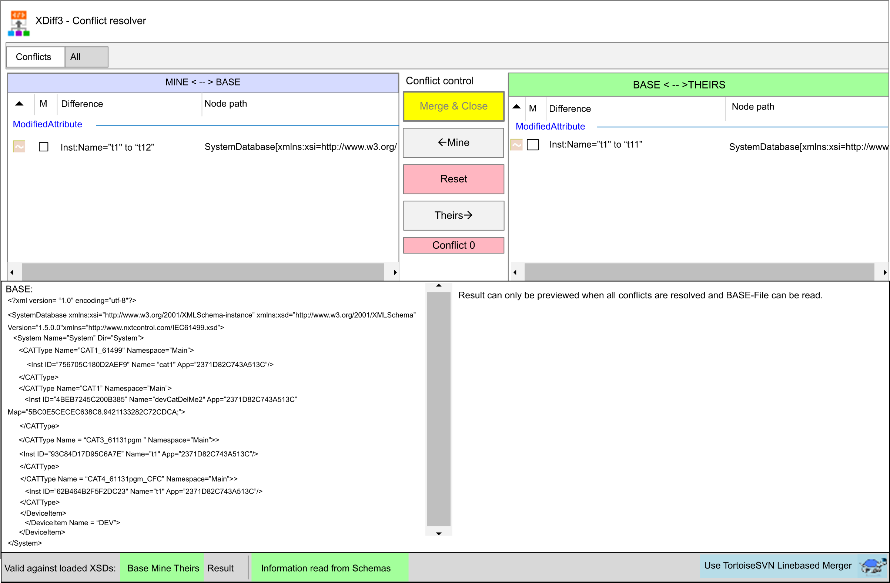

EcoStruxure Automation Expert - Buildtime includes an integrated merge tool called XDiff3 so that XML documents with different processing statuses can be merged according to EcoStruxure Automation Expert - Buildtime requirements.
This function allows the merging of different project statuses.
The tool is not enabled by default, but can be enabled using the Settings dialog (accessed via the File menu and Backstage) in the Subversion (SVN) pane by checking the box next to Use XML-based merge tool. Please note that the tool is only available for the SVN Client Version 1.10.
An upgrade of the existing repository is not necessary. Only the working copies of the corresponding users need to be managed with version 1.10. (Existing repositories can therefore remain on the version they were created with.)
The XML based merger XDiff3 is called automatically when needed. This is always the case if independent changes have been made to the same XML document in different working directories of the same project.
An automatic merge, which requires no additional user activity, takes place if no conflicts occur and the corresponding XML corresponds to a valid format stored in EcoStruxure Automation Expert - Buildtime.
Open the GUI to indicate that the document to be merged does not correspond to the XSD format stored in EcoStruxure Automation Expert - Buildtime.
As noted above, XDiff3 is called in special cases when files are in a conflicting state. This call is always preceded by the Commit Failed! SVN message indicating the working copy must be updated first.
Acknowledge this message with OK:
This leads to the TortoisSVN message indicating the command failed and an update is needed.
This message box presents the following choices:
|
Command |
Description |
|---|---|
| Update |
Updates the working copy and opens the SVN commit dialog once again to start another commit attempt. |
| Cancel |
Cancels the process and opens the SVN Commit dialog again. |
| Show details |
Shows additional information about the files that need to be updated. |
| Cancel |
Like Cancel. |
If the conflict is to be solved automatically, the update process is completed with an automatic merge and the Update Finished! dialog displays information about the merge.
Then the actual commit process can be carried out with the SVN Commit dialog that opens afterwards and the solution is reloaded to update the view in the Solution Explorer as well.
If the intervention of the user is necessary to solve the conflicts, the XDiff3 user interface can be opened by clicking on the context menu entry Edit conflicts from the SVN dialog.
There are two options:
The conflicts can be edited directly from the Update Finished! dialog, or ...
... from the Commit to dialog after a click on the OK button.
In either case, select the Edit conflicts entry to take advantage of the XDiff3 capabilities.
The other entries, such as Resolve conflict using 'theirs', resolve the conflict by selecting the appropriate files from either the local or remote working directory. Here the file will be replaced completely, but no merge action will be performed.
The user interface of the XDiff3 Merge tool opens and the Conflict Info dialog displays an overview of the number of automatically merged files, as well as those that are still in a conflicting state.
The dialog also presents the following commands:
|
Command |
Description |
|---|---|
| OK |
This button closes the Conflict Infowindow and passes it to the XDiff3 tool. |
| OK & Merge |
If this button is active, no further user intervention is needed for the existing conflicts. A click on this button executes an automatic merge and closes the user interface and the GUI of XDiff3 again. If you want to check or edit the solutions of the conflicts before closing the XDiff3, press the OK button instead of the OK & Merge button. |
| Use TortoiseSVN Linebased Merger |
Closes the XDiff3 and opens the SVN-integrated merge tool instead. This option is recommended if, for example, the file to be merged does not have a valid XML format and therefore cannot be reliably merged by XDiff3. If the XML does not correspond to the schema stored in the EcoStruxure Automation Expert - Buildtime, this user interface also indicates this by displaying 'Recommended' and changing the background color. However, a merge with the XDiff3 is still possible under special care of the user. |

Description of the XDiff3 GUI
|
Command |
Description |
|---|---|
|
Tabs |
|
| Conflicts |
Overview of detected conflicts and corresponding conflict resolution. |
| All |
Each detected modification of the input files is displayed. To handle conflicts, switch to the Conflicts tab. |
| Conflict control | |
| Merge & Close |
The user interface is only available if a solution has been defined for all conflicts or if no conflicts exist. The button merges the defined conflict solutions, marks the file conflict for SVN as 'Resolved' and closes the XDiff3. |
| <— Mine |
Assigns a conflict solution to the currently selected conflict, where the changes of the local working directory are applied. |
| Reset |
Deletes a conflict resolution that may have been set. |
| Theirs —> |
Assigns a conflict solution to the currently selected conflict, where the changes of the remote working directory are applied. |
|
Conflict list (Conflict 0, ..) |
Numbered list of all conflicts. The background color of a conflict serves as an indicator for the conflict solution currently set. |
|
Columns |
|
|
NOTE: Check boxes are for display only and cannot be edited directly by the user.
|
|
|
Icons |
The icons on the left side give information about the type of modification: Added node Modified node Removed node Moved node Added attribute Modified attribute Removed attribute |
|
M |
A check mark indicates that the modification will be included in the result. |
|
E (Only in "All"-Tab) |
A check mark indicates that an equivalent modification exists (If the modification is selected in the "All" tab, the equivalent modification is highlighted by a green frame). |
|
C (Only in "All"-Tab) |
A check mark indicates that this modification is part of a conflict. |
|
Difference |
Characteristic description of the modification.. |
|
Node path |
The path of the node on which the modification occurred. |
|
Preview windows |
|
| BASE |
Shows the basic input file (without modifications). |
| Result |
Preview of the result. As long as conflicts exist without a solution, a preview of the result is not possible. If all conflicts are resolved, the preview is displayed. |
|
Status bar at the bottom edge |
|
| Valid against loaded XSDs |
Base, Mine, Theirs, Result -> the background color indicates whether the corresponding XML file corresponds to one of the loaded XSD schemas. The following applies: green is valid, orange is invalid. |
| Information read from Schema |
The background color is green if the stored meta information in the used XSDs could be read in the correct format, and orange if a misformatted meta information was read from at least one of the schemas. |
| Use TortoiseSVN Linebased Merger |
Serves as a button to exit the XDiff3 merge tool and call the SVN integrated line-based merger instead. |
When you right-click on a modification, a context menu with the following items opens::
|
Command |
Description |
|---|---|
|
Remove from / Add to Conflict x |
Manually remove or add the modification from / to a conflict. |
| Suppress merge of difference |
Suppress the inclusion of the modification to the result. |
| Force merge of difference |
Force the inclusion of the modification to the result. |
| Automatically merge difference |
Automatically include the modification to the result. |
| Horizontal Scroll lock |
Activates or deactivates the synchronization regarding the horizontal scroll behavior of two modification overviews within a tab (Conflict or All can be set differently). |
| Vertical Scroll lock |
Activates or deactivates the synchronization regarding the vertical scrolling behavior of two modification overviews within a tab (Conflict or All can be set differently). |